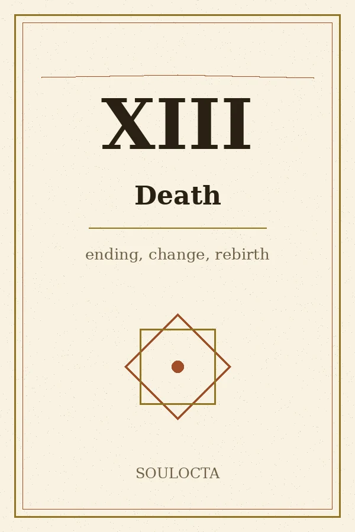

Arcana 13 · Death
Death — Arcana 13 of the Destiny Matrix
Arcana 13, Death, is the card of a clean ending. In the Destiny Matrix it means something has finished — a job, a relationship, a belief, a way of life — and the work is to let it end properly so something new can begin. Death here is not physical death. It is the ending that makes room.

What does Death mean in the Destiny Matrix?
Death as a Destiny Matrix position means something has finished, and the chart is asking you to let it end cleanly. The traditional image is a skeleton with a scythe, cutting down what has grown too old to stand: the card looks frightening, and its meaning is kind. Wherever it sits, the area improves when you grieve honestly, close the door properly, and make room. The card almost never means a physical death, and this site never reads it that way.
| Zone | Positive (+) | Negative (−) | Actionable shift |
|---|---|---|---|
| Centre | Transformation; reinvention; surviving loss well | Clinging to what is over; destroying things first | Close the door properly: one goodbye, one cleared desk |
| Money line | Career change; ending a failing venture cleanly | Staying in a dead job from fear; burning bridges | Write what the job cost you, then plan the exit |
| Love line | Ending honestly; making room for a real relationship | Staying from habit; ending cruelly to avoid guilt | Say the goodbye in plain words, once, kindly |
| Talent | Reinventing a skill for a new use | Refusing to let an old identity go | Use the old skill in one new place this month |
| Karmic tail | Learning to grieve honestly and move on | Repeating the same ending in new costumes | Grieve it once, properly, then stop reopening it |
Death as your centre (E)
Death in the centre means your whole chart is organised around transformation. You can reinvent yourself, survive losses that would break others, and help others through change because you have been through it. You are at your best when you let go cleanly and begin again, and at your worst when you cling to what is already over, which causes more pain than the ending itself. If the ending is a bereavement, this page is not the place to work through it — talk to someone you trust, or a professional, and take the time you need.
Death in your money line
Death in the money line means a career ending is asking to be handled properly: a failing venture closed cleanly, a job left with a plan, a skill retired and a new one begun. The line rewards a proper exit — handover notes, honest words, a date — more than a dramatic resignation. The trap is staying in a dead job from fear, or burning bridges to avoid the guilt of leaving. Write down what the job costs you, in sleep, health and time, and read the two columns side by side.
Death in your love line
Death in the love line means a relationship has finished, or a phase of one has, and the honest move is to say so. A relationship that has become a habit is not a relationship, and staying from habit is unkind to both people. The trap is ending cruelly to avoid guilt — a sudden message, a disappearance — which leaves a wound that follows you into the next relationship. Say the goodbye in plain words, once, kindly, and then let the silence be silence.
Death in your talents
Death in your talents means a skill you are known for has finished its useful life, and a new use is waiting. A teacher who becomes a writer, a nurse who becomes a trainer, a soldier who becomes a gardener — the old skill is not wasted, it is composted. The trap is refusing to let an old identity go, because the identity was comfortable and the new one is not yet earned. Use the old skill in one new place this month, and see what grows.
Death reversed, blocked or low
A blocked Death looks like a ending that never happens. The job is still there, the relationship is still there, the belief is still there, and everyone involved is exhausted by the pretence that it is alive. The block is rarely a lack of courage. It is usually grief postponed: if it never ends, it never has to be mourned. The fix is small and real: clear the desk, end the conversation, say the goodbye, and then let yourself feel it, once, properly.
How to work with Death this month
Pick one thing that is already over and finish it properly this month. Not five things, and not the hardest one — one thing, closed cleanly: the goodbye said, the desk cleared, the subscription cancelled, the apology made. Then make one small space for what comes next: an empty afternoon, an empty shelf, a morning with nothing planned. Death grows by making room, and room is the only thing a new beginning actually needs.
How to turn Death from minus to plus
Five shifts, from minus to plus. First, I cling to what is already over becomes I close the door properly, once. Second, I stay in a dead job from fear becomes I write what it costs me, then plan the exit. Third, I end things cruelly to avoid guilt becomes I say the goodbye in plain words, kindly. Fourth, I refuse to let an old identity go becomes I use the old skill in one new place. Fifth, I reopen the ending again and again becomes I grieve it once, properly, then stop.
Check where this energy sits in your free Destiny Matrix chart — enter your birth date and see whether Death is your centre, your talent, or your karmic tail. If it is, also read your money line and the compatibility calculator.
Related guides
Keep reading: destiny matrix vs numerology · destiny matrix vs tarot · destiny matrix for beginners · destiny matrix FAQ · the Chariot, arcana 7 of the Destiny Matrix · Justice, arcana 8 of the Destiny Matrix · the Lovers, arcana 6 of the Destiny Matrix · the Devil, arcana 15 of the Destiny Matrix · the Sun, arcana 19 of the Destiny Matrix · karmic tail 18-6-6, Love Magic · karmic tail 15-20-5, the Rebel · karmic tail 9-9-18, Magical Knowledge · the Magician, arcana 1 of the Destiny Matrix · the Empress, arcana 3 of the Destiny Matrix · the Emperor, arcana 4 of the Destiny Matrix · the Wheel of Fortune, arcana 10 of the Destiny Matrix · Strength, arcana 11 of the Destiny Matrix · the World, arcana 21 of the Destiny Matrix · karmic tail 15-8-11, Physical Suffering · karmic tail 21-4-10, Oppressed Soul · karmic tail 12-19-7, Warrior · karmic tail 6-17-11, Wasted Talent · all 22 arcana meanings · all karmic tail guides · Destiny Matrix compatibility calculator · what is the Destiny Matrix · how to calculate the Destiny Matrix.
Frequently asked questions
What does arcana 13, Death, mean in the Destiny Matrix?
Arcana 13, Death, means ending, change and rebirth in the Destiny Matrix. Death marks something that has finished — a job, a relationship, a belief — and asks you to let it end cleanly so something new can begin. It is the ending that makes room.
What does Death mean as a centre?
Death as a centre means transformation is the theme of your chart. Your growth comes from letting go cleanly and beginning again, and from helping others through change because you have been through it yourself. The ending is the work, and the room it makes is the reward.
What does Death mean in the money line?
Death in the money line means a career ending is asking to be handled properly. The line rewards a clean exit with handover notes and honest words, and the trap is staying in a dead job from fear or burning bridges to avoid guilt.
What does Death mean in love?
Death in the love line means a relationship, or a phase of one, has finished, and the honest move is to say so. Staying from habit is unkind to both people, so say the goodbye in plain words, once, kindly.